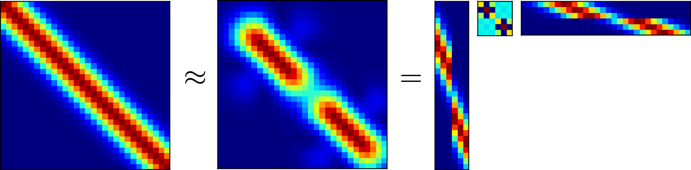
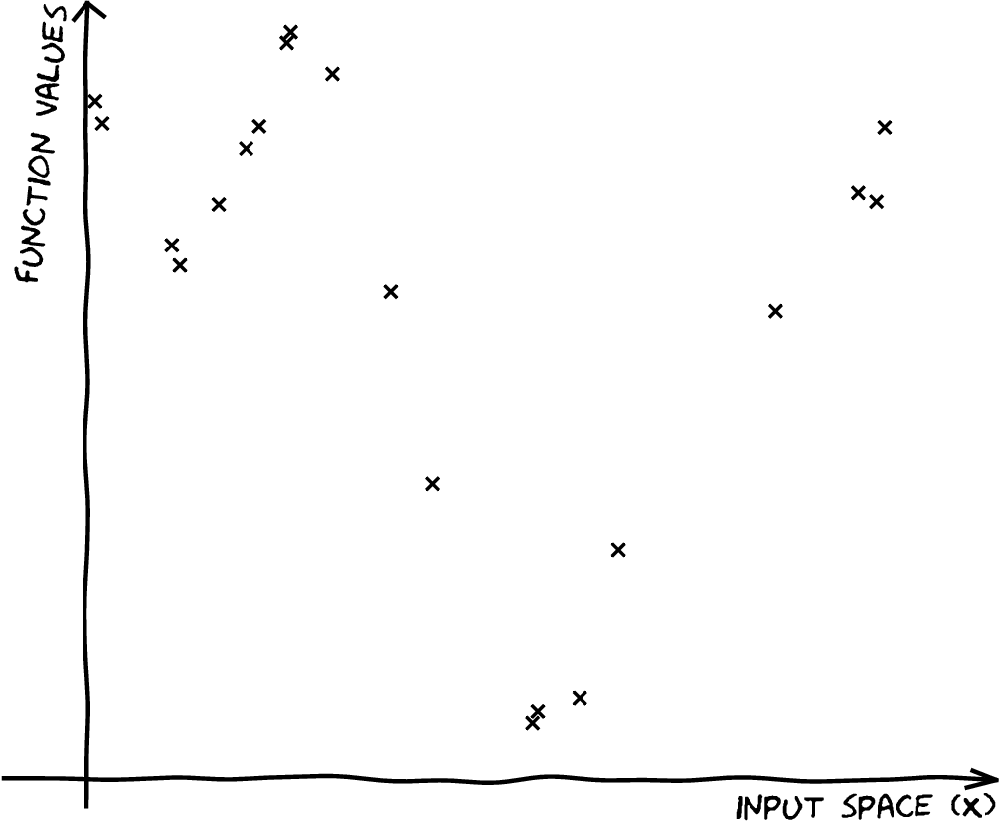
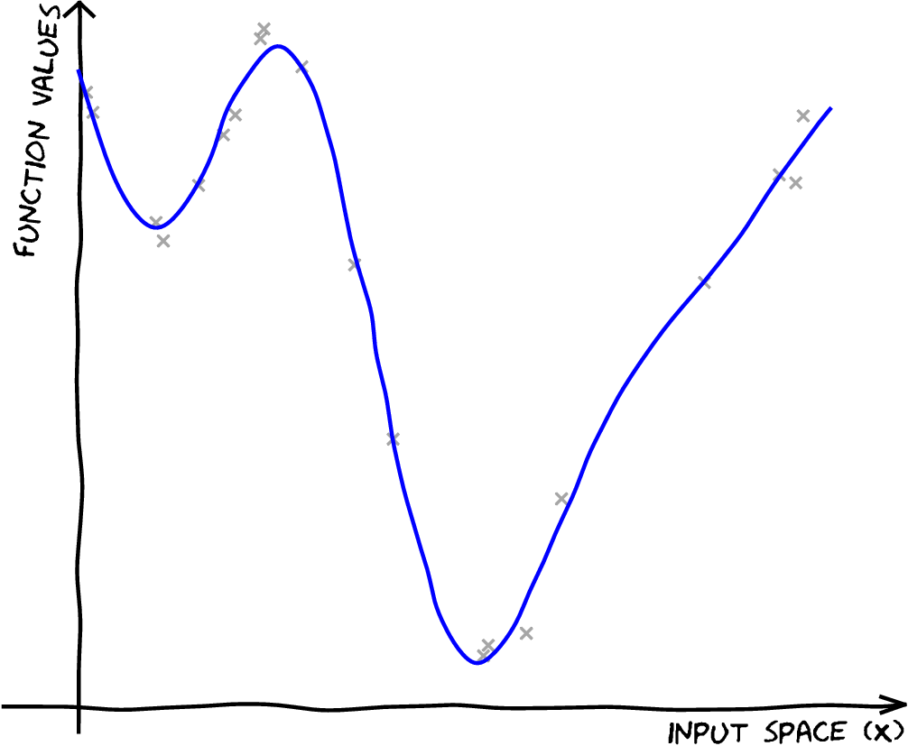
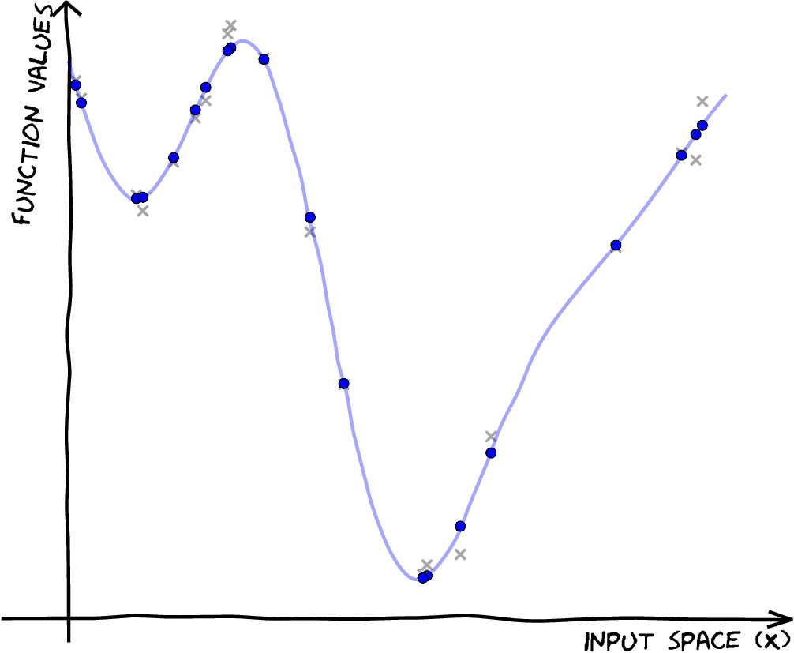
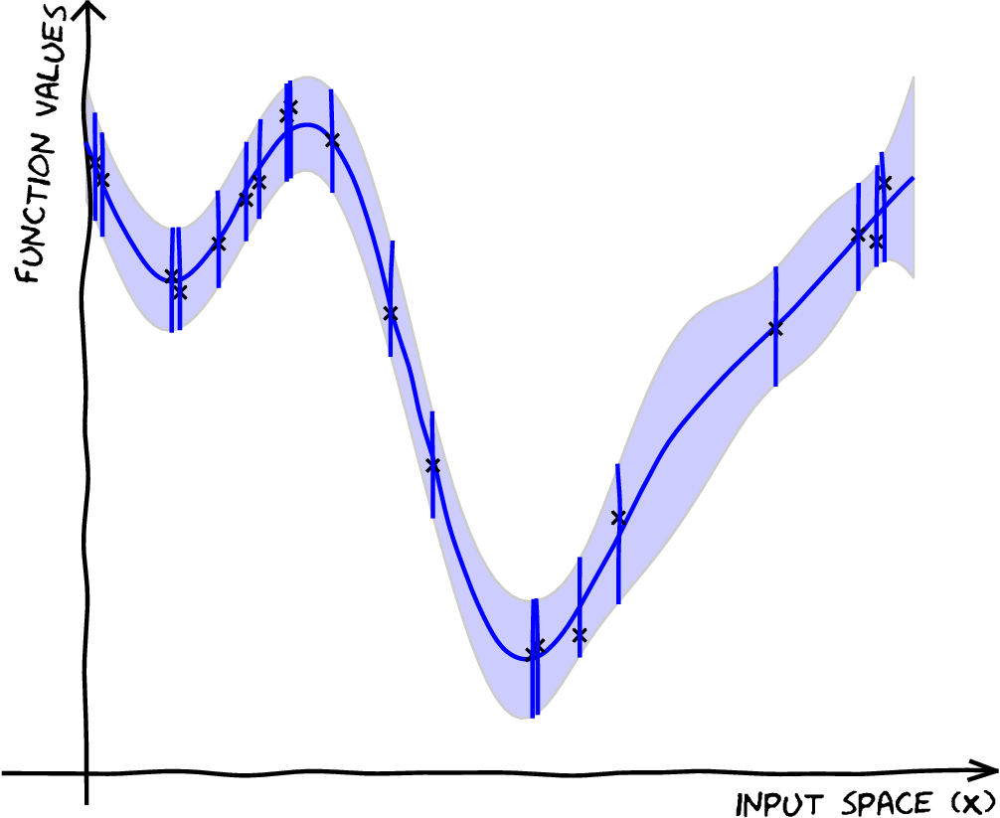
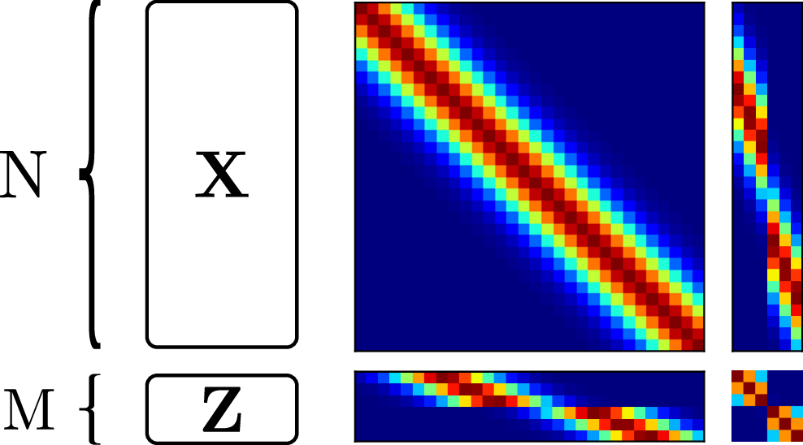
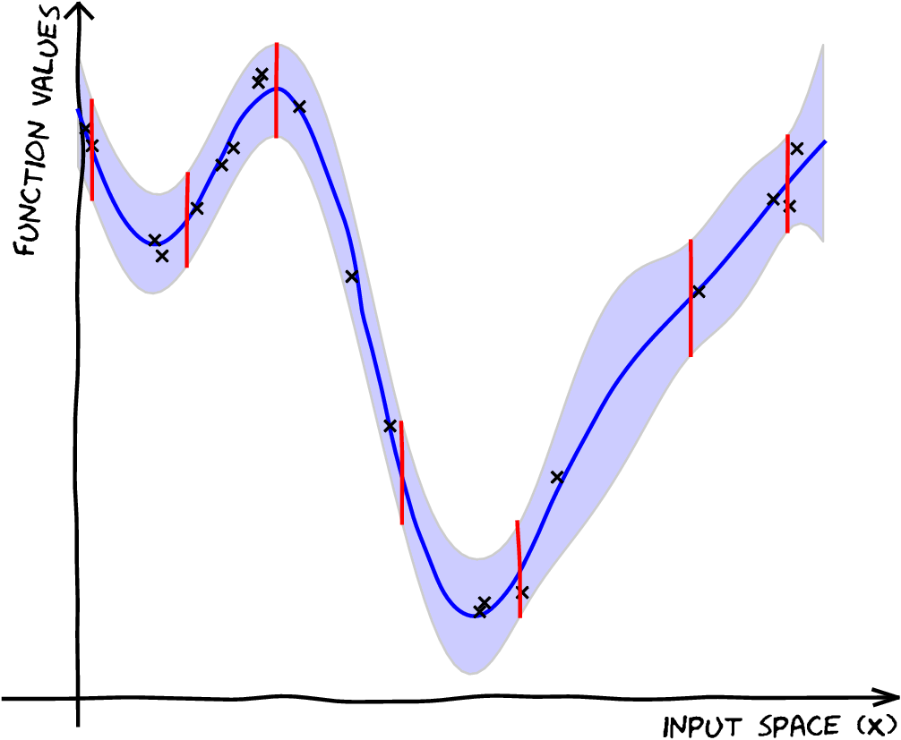

DRAFT SLIDES: Deep Probabilistic Modelling with with Gaussian Processes
Neil D. Lawrence
DRAFT SLIDES
What is Machine Learning?
\[ \text{data} + \text{model} \rightarrow \text{prediction}\]
- \(\text{data}\) : observations, could be actively or passively acquired (meta-data).
- \(\text{model}\) : assumptions, based on previous experience (other data! transfer learning etc), or beliefs about the regularities of the universe. Inductive bias.
- \(\text{prediction}\) : an action to be taken or a categorization or a quality score.
Artificial Intelligence
- Machine learning is a mainstay because of importance of prediction.
What is Machine Learning?
Simple description
\[\text{data} + \text{model} \rightarrow \text{prediction}\]
To combine data with a model need:
a prediction function \(f(\cdot)\) includes our beliefs about the regularities of the universe
an objective function \(E(\cdot)\) defines the cost of misprediction.
Uncertainty
- Uncertainty in prediction arises from:
- scarcity of training data and
- mismatch between the set of prediction functions we choose and all possible prediction functions.
- Also uncertainties in objective, leave those for another day.
Neural Networks and Prediction Functions
adaptive non-linear function models inspired by simple neuron models [McCulloch:neuron43]
have become popular because of their ability to model data.
can be composed to form highly complex functions
start by focussing on one hidden layer
Prediction Function of One Hidden Layer
\[ f({\bf x}) = \mathbf{W}^\top \boldsymbol{\phi}(\mathbf{V}, {\bf x}) \]
\(f(\cdot)\) is a scalar function with vector inputs,
\(\boldsymbol{\phi}(\cdot)\) is a vector function with vector inputs.
dimensionality of the vector function is known as the number of hidden units, or the number of neurons.
elements of \(\boldsymbol{\phi}(\cdot)\) are the activation function of the neural network
elements of \(\mathbf{V}\) are the parameters of the activation functions.
Relations with Classical Statistics
In statistics activation functions are known as basis functions.
would think of this as a linear model: not linear predictions, linear in the parameters
\(\mathbf{V}\) are static parameters.
Adaptive Basis Functions
In machine learning we optimize \(\mathbf{V}\) as well as \(\mathbf{W}\) (which would normally be denoted in statistics by \(\boldsymbol{\beta}\)).
This tutorial: revisit that decision: follow the path of Radford Neal [Neal:bayesian94] and David MacKay [MacKay:bayesian92].
Consider the probabilistic approach.
Probabilistic Modelling
- Probabilistically we want, \[ p(y_*|\mathbf{y}, {\bf X}, {\bf x}_*), \] \(y_*\) is a test output \({\bf x}_*\) is a test input \({\bf X}\) is a training input matrix \(\mathbf{y}\) is training outputs
Joint Model of World
\[ p(y_*|\mathbf{y}, {\bf X}, {\bf x}_*) = \int p(y_*|{\bf x}_*, \boldsymbol{\theta}) p(\boldsymbol{\theta}| \mathbf{y}, {\bf X}) \text{d} \boldsymbol{\theta} \]
\(\boldsymbol{\theta}\) contains \(\mathbf{W}\) and \(\mathbf{V}\)
\(p(\boldsymbol{\theta}| \mathbf{y}, {\bf X})\) is posterior density
Likelihood
\(p(y|{\bf x}, \boldsymbol{\theta})\) is the likelihood of data point
Normally assume independence: \[ p(\mathbf{y}|{\bf X}, \boldsymbol{\theta}) \prod_{i=1}^np(y_i|{\bf x}_i, \boldsymbol{\theta}),\]
Likelihood and Prediction Function
\[ p(y_i | f({\bf x}_i)) = \frac{1}{\sqrt{2\pi \sigma^2}} \exp\left(-\frac{\left(y_i - f({\bf x}_i)\right)^2}{2\sigma^2}\right) \]
Unsupervised Learning
Can also consider priors over latents \[ p(\mathbf{y}_*|\mathbf{y}) = \int p(\mathbf{y}_*|{\bf X}_*, \boldsymbol{\theta}) p(\boldsymbol{\theta}| \mathbf{y}, {\bf X}) p({\bf X}) p({\bf X}_*) \text{d} \boldsymbol{\theta}\text{d} {\bf X}\text{d}{\bf X}_* \]
This gives unsupervised learning.
Probabilistic Inference
Data: \(\mathbf{y}\)
Model: \(p(\mathbf{y}, \mathbf{y}^*)\)
Prediction: \(p(\mathbf{y}^*| \mathbf{y})\)
Performing Inference
Easy to write in probabilities
But underlying this is a wealth of computational challenges.
High dimensional integrals typically require approximation.
Linear Models
In statistics, focussed more on linear model implied by \[ f({\bf x}) = \mathbf{W}^\top \boldsymbol{\phi}(\boldsymbol{\theta}, {\bf x}) \]
Hold \(\mathbf{V}\) fixed for given analysis.
Gaussian prior for \(\mathbf{W}\), \[ \mathbf{W}\sim \mathcal{N}\left(\mathbf{0},\mathbf{C}\right). \] \[ y_i = f({\bf x}_i) + \epsilon_i, \] where \[ \epsilon_i \sim \mathcal{N}\left(0,\sigma^2\right) \]
Linear Gaussian Models
- Normally integrals are complex but for this Gaussian linear case they are trivial.
Linear Gaussian Models
- linear Gaussian models are easier to deal with
- Even the parameters within the process can be handled, by considering a particular limit.
Multivariate Gaussian Properties
- If \[ \mathbf{y}= \mathbf{W}{\bf x}+ \boldsymbol{\epsilon}, \]
- Assume \[\begin{align} {\bf x}& \sim \mathcal{N}\left(\boldsymbol{\mu},\mathbf{C}\right)\\ \boldsymbol{\epsilon}& \sim \mathcal{N}\left(\mathbf{0},\boldsymbol{\Sigma}\right) \end{align}\]
- Then \[ \mathbf{y}\sim \mathcal{N}\left(\mathbf{W}\boldsymbol{\mu},\mathbf{W}\mathbf{C}\mathbf{W}^\top + \boldsymbol{\Sigma}\right). \] If \(\boldsymbol{\Sigma}=\sigma^2\mathbf{I}\), this is Probabilistic Principal Component Analysis [Tipping:probpca99], because we integrated out the inputs (or latent variables they would be called in that case).
Non linear on Inputs
- Set each activation function computed at each data point to be \[ \phi_{i,j} = \phi(\mathbf{v}_{j}, {\bf x}_{i}) \] Define design matrix \[ \boldsymbol{\Phi}= \begin{bmatrix} \phi_{1, 1} & \phi_{1, 2} & \dots & \phi_{1, h} \\ \phi_{1, 2} & \phi_{1, 2} & \dots & \phi_{1, n} \\ \vdots & \vdots & \ddots & \vdots \\ \phi_{n, 1} & \phi_{n, 2} & \dots & \phi_{n, h} \end{bmatrix}. \]
Prior Density
Define \[ \mathbf{w}\sim \mathcal{N}\left(\mathbf{0},\alpha\mathbf{I}\right), \]
Rules of multivariate Gaussians to see that, \[ \mathbf{y}\sim \mathcal{N}\left(\mathbf{0},\alpha \boldsymbol{\Phi}\boldsymbol{\Phi}^\top + \sigma^2 \mathbf{I}\right). \]
\[ \mathbf{K}= \alpha \boldsymbol{\Phi}\boldsymbol{\Phi}^\top + \sigma^2 \mathbf{I}. \]
Joint Gaussian Density
- Elements are a function \(k_{i,j} = k\left({\bf x}_i, {\bf x}_j\right)\)
\[ \mathbf{K}= \alpha \boldsymbol{\Phi}\boldsymbol{\Phi}^\top + \sigma^2 \mathbf{I}. \]
Covariance Function
\[ k_f\left({\bf x}_i, {\bf x}_j\right) = \alpha \boldsymbol{\phi}\left(\mathbf{V}, {\bf x}_i\right)^\top \boldsymbol{\phi}\left(\mathbf{V}, {\bf x}_j\right) \]
- formed by inner products of the rows of the design matrix.
Gaussian Process
Instead of making assumptions about our density over each data point, \(y_i\) as i.i.d.
make a joint Gaussian assumption over our data.
covariance matrix is now a function of both the parameters of the activation function, \(\mathbf{V}\), and the input variables, \({\bf X}\).
Arises from integrating out, \(\mathbf{w}\).
Basis Functions
Can be very complex, such as deep kernels, [Cho:deep09] or could even put a convolutional neural network inside.
Viewing a neural network in this way is also what allows us to beform sensible batch normalizations [Ioffe:batch15].
Non-degenerate Gaussian Processes
This process is degenerate.
Covariance function is of rank at most \(h\).
As \(n\rightarrow \infty\), covariance matrix is not full rank.
Leading to \(\left|\mathbf{K}\right| = 0\)
Infinite Networks
- In ML Radford Neal [Neal:bayesian94] asked “what would happen if you took \(h\rightarrow \infty\)?”

Page 37 of Radford Neal’s 1994 thesis
Roughly Speaking
Instead of \[\begin{align*} k_f\left({\bf x}_i, {\bf x}_j\right) & = \alpha \boldsymbol{\phi}\left(\mathbf{V}, {\bf x}_i\right)^\top \boldsymbol{\phi}\left(\mathbf{V}, {\bf x}_j\right)\\ & = \sum_k \phi\left(\mathbf{v}_k, {\bf x}_i\right) \phi\left(\mathbf{v}_k, {\bf x}_j\right) \end{align*}\]
Sample infinitely many from a prior density, \(p(\mathbf{v})\), \[ k_f\left({\bf x}_i, {\bf x}_j\right) = \int \phi\left(\mathbf{v}, {\bf x}_i\right) \phi\left(\mathbf{v}, {\bf x}_j\right) p(\mathbf{v}) \text{d}\mathbf{v} \]
Also applies for non-Gaussian \(p(\mathbf{v})\) because of the central limit theorem.
Simple Probabilistic Program
If \[\begin{align*} \mathbf{v}& \sim p(\cdot)\\ \phi_i & = \phi\left(\mathbf{v}, {\bf x}_i\right), \end{align*}\] has finite variance.
Then taking number of hidden units to infinity, is also a Gaussian process.
Further Reading
Chapter 2 of Neal’s thesis
Rest of Neal’s thesis.
David MacKay’s PhD thesis [MacKay:bayesian92]
Key Object
Covariance function, \(\mathbf{K}\)
Determines properties of samples.
Function of \({\bf X}\), \[k_{i,j} = k({\bf x}_i, {\bf x}_j)\]
Linear Algebra
Posterior mean
\[f_D({\bf x}_*) = \mathbf{k}({\bf x}_*, {\bf X}) \mathbf{K}^{-1} \mathbf{y}\]
Posterior covariance \[\mathbf{C}_* = \mathbf{K}_{*,*} - \mathbf{K}_{*,\mathbf{f}} \mathbf{K}^{-1} \mathbf{K}_{\mathbf{f}, *}\]
Linear Algebra
Posterior mean
\[f_D({\bf x}_*) = \mathbf{k}({\bf x}_*, {\bf X}) \boldsymbol{\alpha}\]
Posterior covariance \[\mathbf{C}_* = \mathbf{K}_{*,*} - \mathbf{K}_{*,\mathbf{f}} \mathbf{K}^{-1} \mathbf{K}_{\mathbf{f}, *}\]
Approximate Gaussian Processes
Low Rank Motivation
Inference in a GP has the following demands:
Complexity: \(\mathcal{O}(n^3)\) Storage: \(\mathcal{O}(n^2)\) Inference in a low rank GP has the following demands:
Complexity: \(\mathcal{O}(nm^2)\) Storage: \(\mathcal{O}(nm)\) where \(m\) is a user chosen parameter.
[Snelson:pseudo05,Quinonero:unifying05,Lawrence:larger07,Titsias:variational09]
Variational Compression
Inducing variables are a compression of the real observations.
They are like pseudo-data. They can be in space of \(\mathbf{f}\) or a space that is related through a linear operator [Alvarez:efficient10] — e.g. a gradient or convolution.
Variational Compression II
Introduce inducing variables.
Compress information into the inducing variables and avoid the need to store all the data.
Allow for scaling e.g. stochastic variational Hensman:bigdata13 or parallelization Gal:Distributed14,Dai:gpu14, Seeger:auto17
Nonparametric Gaussian Processes
We’ve seen how we go from parametric to non-parametric.
The limit implies infinite dimensional \(\mathbf{w}\).
Gaussian processes are generally non-parametric: combine data with covariance function to get model.
This representation cannot be summarized by a parameter vector of a fixed size.
The Parametric Bottleneck
Parametric models have a representation that does not respond to increasing training set size.
Bayesian posterior distributions over parameters contain the information about the training data.
Use Bayes’ rule from training data, \(p\left(\mathbf{w}|\mathbf{y}, {\bf X}\right)\),
Make predictions on test data \[p\left(y_*|{\bf X}_*, \mathbf{y}, {\bf X}\right) = \int p\left(y_*|\mathbf{w},{\bf X}_*\right)p\left(\mathbf{w}|\mathbf{y}, {\bf X})\text{d}\mathbf{w}\right).\]
\(\mathbf{w}\) becomes a bottleneck for information about the training set to pass to the test set.
Solution: increase \(m\) so that the bottleneck is so large that it no longer presents a problem.
How big is big enough for \(m\)? Non-parametrics says \(m\rightarrow \infty\).
The Parametric Bottleneck
- Now no longer possible to manipulate the model through the standard parametric form.
- However, it is possible to express parametric as GPs: \[k\left({\bf x}_i,{\bf x}_j\right)=\phi_:\left({\bf x}_i\right)^\top\phi_:\left({\bf x}_j\right).\]
- These are known as degenerate covariance matrices.
- Their rank is at most \(m\), non-parametric models have full rank covariance matrices.
- Most well known is the “linear kernel”, \(k({\bf x}_i, {\bf x}_j) = {\bf x}_i^\top{\bf x}_j\).
Making Predictions
- For non-parametrics prediction at new points \(\mathbf{f}_*\) is made by conditioning on \(\mathbf{f}\) in the joint distribution.
- In GPs this involves combining the training data with the covariance function and the mean function.
- Parametric is a special case when conditional prediction can be summarized in a fixed number of parameters.
- Complexity of parametric model remains fixed regardless of the size of our training data set.
- For a non-parametric model the required number of parameters grows with the size of the training data.
Information capture
Everything we want to do with a GP involves marginalising \(\mathbf{f}\)
Predictions
Marginal likelihood
Estimating covariance parameters
The posterior of \(\mathbf{f}\) is the central object. This means inverting \(\mathbf{K}_{\mathbf{f}\mathbf{f}}\).
Computational Savings

\[\mathbf{K}_{\mathbf{f}\mathbf{f}}\approx {\bf Q}_{\mathbf{f}\mathbf{f}}= \mathbf{K}_{\mathbf{f}\mathbf{u}}\mathbf{K}_{\mathbf{u}\mathbf{u}}^{-1}\mathbf{K}_{\mathbf{u}\mathbf{f}}\]
Instead of inverting \(\mathbf{K}_{\mathbf{f}\mathbf{f}}\), we make a low rank (or Nyström) approximation, and invert \(\mathbf{K}_{\mathbf{u}\mathbf{u}}\) instead.
Figure originally from presentation by Ed Snelson at NIPS
Smola:sparsegp00,Csato:sparse00,Csato:sparse02,Csato:thesis02,Seeger:fast03
| \[{\bf X},\,\mathbf{y}\] |  |
| \[{\bf X},\,\mathbf{y}\] \[{\color{\blueColor} f({\bf x})} \sim {\mathcal GP}\] |  |
| \[{\bf X},\,\mathbf{y}\] \[f({\bf x}) \sim {\mathcal GP}\] \[p({\color{\blueColor} \mathbf{f}}) = \mathcal{N}\left(\mathbf{0},\mathbf{K}_{\mathbf{f}\mathbf{f}}\right)\] |  |
| \[{\bf X},\,\mathbf{y}\] \[f({\bf x}) \sim {\mathcal GP}\] \[p(\mathbf{f}) = \mathcal{N}\left(\mathbf{0},\mathbf{K}_{\mathbf{f}\mathbf{f}}\right)\] \[p( \mathbf{f}|\mathbf{y},{\bf X})\] |  |
Introducing \(\mathbf{u}\)
Take an extra \(m\) points on the function, \(\mathbf{u}= f(\mathbf{Z})\). \[p(\mathbf{y},\mathbf{f},\mathbf{u}) = p(\mathbf{y}|\mathbf{f}) p(\mathbf{f}|\mathbf{u}) p(\mathbf{u})\]
Introducing \(\mathbf{u}\)

Introducing \(\mathbf{u}\)
Take and extra \(M\) points on the function, \(\mathbf{u}= f(\mathbf{Z})\). \[p(\mathbf{y},\mathbf{f},\mathbf{u}) = p(\mathbf{y}|\mathbf{f}) p(\mathbf{f}|\mathbf{u}) p(\mathbf{u})\] \[\begin{aligned} p(\mathbf{y}|\mathbf{f}) &= \mathcal{N}\left(\mathbf{y}|\mathbf{f},\sigma^2 \mathbf{I}\right)\\ p(\mathbf{f}|\mathbf{u}) &= \mathcal{N}\left(\mathbf{f}| \mathbf{K}_{\mathbf{f}\mathbf{u}}\mathbf{K}_{\mathbf{u}\mathbf{u}}^{-1}\mathbf{u}, \tilde{\mathbf{K}}\right)\\ p(\mathbf{u}) &= \mathcal{N}\left(\mathbf{u}| \mathbf{0},\mathbf{K}_{\mathbf{u}\mathbf{u}}\right) \end{aligned}\]
| \[{\bf X},\,\mathbf{y}\] \[f({\bf x}) \sim {\mathcal GP}\] \[p(\mathbf{f}) = \mathcal{N}\left(\mathbf{0},\mathbf{K}_{\mathbf{f}\mathbf{f}}\right)\] \[p(\mathbf{f}|\mathbf{y},{\bf X})\] |
|
$$
| \[{\bf X},\,\mathbf{y}\] \[f({\bf x}) \sim {\mathcal GP}\] \[p(\mathbf{f}) = \mathcal{N}\left(\mathbf{0},\mathbf{K}_{\mathbf{f}\mathbf{f}}\right)\] \[p(\mathbf{f}|\mathbf{y},{\bf X})\] \[p(\mathbf{u}) = \mathcal{N}\left(\mathbf{0},\mathbf{K}_{\mathbf{u}\mathbf{u}}\right)\] \[\widetilde p({\color{red}\mathbf{u}}|\mathbf{y},{\bf X})\] |  |
The alternative posterior
Instead of doing \[p(\mathbf{f}|\mathbf{y},{\bf X}) = \frac{p(\mathbf{y}|\mathbf{f})p(\mathbf{f}|{\bf X})}{\int p(\mathbf{y}|\mathbf{f})p(\mathbf{f}|{\bf X}){\text{d}\mathbf{f}}}\] We’ll do \[p(\mathbf{u}|\mathbf{y},\mathbf{Z}) = \frac{p(\mathbf{y}|\mathbf{u})p(\mathbf{u}|\mathbf{Z})}{\int p(\mathbf{y}|\mathbf{u})p(\mathbf{u}|\mathbf{Z}){\text{d}\mathbf{u}}}\]
Parametric but Non-parametric
Augment with a vector of inducing variables, \(\mathbf{u}\).
Form a variational lower bound on true likelihood.
Bound factorizes given inducing variables.
Inducing variables appear in bound similar to parameters in a parametric model.
But number of inducing variables can be changed at run time.
Inducing Variable Approximations
Date back to . See for a review.
We follow variational perspective of .
This is an augmented variable method, followed by a collapsed variational approximation .
Variational Bound on \(p(\mathbf{y}|\mathbf{u})\)
\[\begin{aligned} \log p(\mathbf{y}|\mathbf{u}) & = \log \int p(\mathbf{y}|\mathbf{f}) p(\mathbf{f}|\mathbf{u}) \text{d}\mathbf{f}\\ & = \int q(\mathbf{f}) \log \frac{p(\mathbf{y}|\mathbf{f}) p(\mathbf{f}|\mathbf{u})}{q(\mathbf{f})}\text{d}\mathbf{f}+ \text{KL}\left( q(\mathbf{f})\,\|\,p(\mathbf{f}|\mathbf{y}, \mathbf{u}) \right) \end{aligned}\]
- Example, set \(q(\mathbf{f})=p(\mathbf{f}|\mathbf{u})\), \[\log p(\mathbf{y}|\mathbf{u}) \geq \log \int p(\mathbf{f}|\mathbf{u}) \log p(\mathbf{y}|\mathbf{f})\text{d}\mathbf{f}.\] \[p(\mathbf{y}|\mathbf{u}) \geq \exp \int p(\mathbf{f}|\mathbf{u}) \log p(\mathbf{y}|\mathbf{f})\text{d}\mathbf{f}.\]
Optimal Compression in Inducing Variables
Maximizing lower bound minimizes the KL divergence (information gain): \[\text{KL}\left( p(\mathbf{f}|\mathbf{u})\,\|\,p(\mathbf{f}|\mathbf{y}, \mathbf{u}) \right) = \int p(\mathbf{f}|\mathbf{u}) \log \frac{p(\mathbf{f}|\mathbf{u})}{p(\mathbf{f}|\mathbf{y}, \mathbf{u})}\text{d}\mathbf{u}\]
This is minimized when the information stored about \(\mathbf{y}\) is stored already in \(\mathbf{u}\).
The bound seeks an optimal compression from the information gain perspective.
If \(\mathbf{u}= \mathbf{f}\) bound is exact (\(\mathbf{f}\) \(d\)-separates \(\mathbf{y}\) from \(\mathbf{u}\)).
Choice of Inducing Variables
Optimizing the bound directly not always practical.
Free to choose whatever heuristics for the inducing variables.
Can quantify which heuristics perform better through checking lower bound.
Factorizing Likelihoods
If the likelihood, \(p(\mathbf{y}|\mathbf{f})\), factorizes
<8-> Then the bound factorizes.
<10-> Now need a choice of distributions for \(\mathbf{f}\) and \(\mathbf{y}|\mathbf{f}\) …
\[\mathbf{f}, \mathbf{u}\sim \mathcal{N}\left(\mathbf{0},\begin{bmatrix}\mathbf{K}_{\mathbf{f}\mathbf{f}}& \mathbf{K}_{\mathbf{f}\mathbf{u}}\\\mathbf{K}_{\mathbf{u}\mathbf{f}}& \mathbf{K}_{\mathbf{u}\mathbf{u}}\end{bmatrix}\right)\] \[\mathbf{y}|\mathbf{f}= \prod_{i} \mathcal{N}\left(f,\sigma^2\right)\]
Gaussian \(p(y_i|f_i)\)
For Gaussian likelihoods:
Gaussian Process Over \(\mathbf{f}\) and \(\mathbf{u}\)
Define: \[q_{i, i} = \text{var}_{p(f_i|\mathbf{u})}\left( f_i \right) = \left<f_i^2\right>_{p(f_i|\mathbf{u})} - \left<f_i\right>_{p(f_i|\mathbf{u})}^2\] We can write: \[c_i = \exp\left(-{\frac{q_{i,i}}{2\sigma^2}}\right)\] If joint distribution of \(p(\mathbf{f}, \mathbf{u})\) is Gaussian then: \[q_{i, i} = k_{i, i} - \mathbf{k}_{i, \mathbf{u}}^\top \mathbf{K}_{\mathbf{u}, \mathbf{u}}^{-1} \mathbf{k}_{i, \mathbf{u}}\]
\(c_i\) is not a function of \(\mathbf{u}\) but is a function of \({\bf X}_\mathbf{u}\).
Total Conditional Variance
The sum of \(q_{i,i}\) is the total conditional variance.
If conditional density \(p(\mathbf{f}|\mathbf{u})\) is Gaussian then it has covariance \[\mathbf{Q} = \mathbf{K}_{\mathbf{f}\mathbf{f}} - \mathbf{K}_{\mathbf{f}\mathbf{u}}\mathbf{K}_{\mathbf{u}\mathbf{u}}^{-1} \mathbf{K}_{\mathbf{u}\mathbf{f}}\]
\(\text{tr}\left(\mathbf{Q}\right) = \sum_{i}q_{i,i}\) is known as total variance.
Because it is on conditional distribution we call it total conditional variance.
Capacity of a Density
Measure the ’capacity of a density’.
Determinant of covariance represents ’volume’ of density.
log determinant is entropy: sum of log eigenvalues of covariance.
trace of covariance is total variance: sum of eigenvalues of covariance.
\(\lambda > \log \lambda\) then total conditional variance upper bounds entropy.
Alternative View
Exponentiated total variance bounds determinant. \[\left|\mathbf{Q}\right| < \exp \text{tr}\left(\mathbf{Q}\right)\] Because \[\prod_{i=1}^k \lambda_i < \prod_{i=1}^k \exp(\lambda_i)\] where \(\{\lambda_i\}_{i=1}^k\) are the positive eigenvalues of \(\mathbf{Q}\) This in turn implies \[\left|\mathbf{Q}\right| < \prod_{i=1}^k \exp\left(q_{i,i}\right)\]
Communication Channel
Conditional density \(p(\mathbf{f}|\mathbf{u})\) can be seen as a communication channel.
Normally we have: \[\text{Transmitter} \xrightarrow{\mathbf{u}} \begin{smallmatrix}p(\mathbf{f}|\mathbf{u}) \\ \text{Channel}\end{smallmatrix} \xrightarrow{\mathbf{f}} \text{Receiver}\] and we control \(p(\mathbf{u})\) (the source density).
Here we can also control the transmission channel \(p(\mathbf{f}|\mathbf{u})\).
Lower Bound on Likelihood
Substitute variational bound into marginal likelihood: \[p(\mathbf{y})\geq \prod_{i=1}^nc_i \int \mathcal{N}\left(\mathbf{y}|\left<\mathbf{f}\right>,\sigma^2\mathbf{I}\right)p(\mathbf{u}) \text{d}\mathbf{u}\] Note that: \[\left<\mathbf{f}\right>_{p(\mathbf{f}|\mathbf{u})} = \mathbf{K}_{\mathbf{f}, \mathbf{u}} \mathbf{K}_{\mathbf{u}, \mathbf{u}}^{-1}\mathbf{u}\] is linearly dependent on \(\mathbf{u}\).
Deterministic Training Conditional
Making the marginalization of \(\mathbf{u}\) straightforward. In the Gaussian case: \[p(\mathbf{u}) = \mathcal{N}\left(\mathbf{u}|\mathbf{0},\mathbf{K}_{\mathbf{u},\mathbf{u}}\right)\]
Variational marginalisation of \(\mathbf{f}\)
\[\log p(\mathbf{y}|\mathbf{u}) = \log\int p(\mathbf{y}|\mathbf{f})p(\mathbf{f}|\mathbf{u},{\bf X})\text{d}\mathbf{f}\]
\[\log p(\mathbf{y}|\mathbf{u}) = \log \mathbb{E}_{p(\mathbf{f}|\mathbf{u},{\bf X})}\left[p(\mathbf{y}|\mathbf{f})\right]\] \[\log p(\mathbf{y}|\mathbf{u}) \geq \mathbb{E}_{p(\mathbf{f}|\mathbf{u},{\bf X})}\left[\log p(\mathbf{y}|\mathbf{f})\right]\triangleq \log\widetilde p(\mathbf{y}|\mathbf{u})\]
No inversion of \(\mathbf{K}_{\mathbf{f}\mathbf{f}}\) required
Variational marginalisation of \(\mathbf{f}\) (another way)
\[p(\mathbf{y}|\mathbf{u}) = \frac{p(\mathbf{y}|\mathbf{f})p(\mathbf{f}|\mathbf{u})}{p(\mathbf{f}|\mathbf{y}, \mathbf{u})}\] \[\log p(\mathbf{y}|\mathbf{u}) = \log p(\mathbf{y}|\mathbf{f}) + \log \frac{p(\mathbf{f}|\mathbf{u})}{p(\mathbf{f}|\mathbf{y}, \mathbf{u})}\] \[\log p(\mathbf{y}|\mathbf{u}) = \bbE_{p(\mathbf{f}|\mathbf{u})}\big[\log p(\mathbf{y}|\mathbf{f})\big] + \bbE_{p(\mathbf{f}|\mathbf{u})}\big[\log \frac{p(\mathbf{f}|\mathbf{u})}{p(\mathbf{f}|\mathbf{y}, \mathbf{u})}\big]\] \[\log p(\mathbf{y}|\mathbf{u}) = \widetilde p(\mathbf{y}|\mathbf{u}) + \textsc{KL}[p(\mathbf{f}|\mathbf{u})||p(\mathbf{f}|\mathbf{y}, \mathbf{u})]\]
No inversion of \(\mathbf{K}_{\mathbf{f}\mathbf{f}}\) required
A Lower Bound on the Likelihood
\[\widetilde p(\mathbf{y}|\mathbf{u}) = \prod_{i=1}^n\widetilde p(y_i|\mathbf{u})\] \[\widetilde p(y|\mathbf{u}) = \mathcal{N}\left(y|\mathbf{k}_{fu}\mathbf{K}_{\mathbf{u}\mathbf{u}}^{-1}\mathbf{u},\sigma^2\right) \,{\color{red}\exp\left\{-\tfrac{1}{2\sigma^2}\left(k_{ff}- \mathbf{k}_{fu}\mathbf{K}_{\mathbf{u}\mathbf{u}}^{-1}\mathbf{k}_{uf}\right)\right\}}\]
A straightforward likelihood approximation, and a penalty term
Now we can marginalise \(\mathbf{u}\)
\[\widetilde p(\mathbf{u}|\mathbf{y},\mathbf{Z}) = \frac{\widetilde p(\mathbf{y}|\mathbf{u})p(\mathbf{u}|\mathbf{Z})}{\int \widetilde p(\mathbf{y}|\mathbf{u})p(\mathbf{u}|\mathbf{Z})\dif{\mathbf{u}}}\]
Computing the posterior costs \(\mathcal{O}(nm^2)\)
We also get a lower bound of the marginal likelihood
What does the penalty term do?
\[{\color{red}\sum_{i=1}^n-\tfrac{1}{2\sigma^2}\left(k_{ff}- \mathbf{k}_{fu}\mathbf{K}_{\mathbf{u}\mathbf{u}}^{-1}\mathbf{k}_{uf}\right)}\]
What does the penalty term do?
\[{\color{red}\sum_{i=1}^n-\tfrac{1}{2\sigma^2}\left(k_{ff}- \mathbf{k}_{fu}\mathbf{K}_{\mathbf{u}\mathbf{u}}^{-1}\mathbf{k}_{uf}\right)}\]
What does the penalty term do?
How good is the inducing approximation?
It’s easy to show that as \(\mathbf{Z}\to {\bf X}\):
\(\mathbf{u}\to \mathbf{f}\) (and the posterior is exact)
The penalty term is zero.
The cost returns to \(\mathcal{O}(n^3)\)
Predictions
Recap
So far we:
introduced \(\mathbf{Z}, \mathbf{u}\)
approximated the intergral over \(\mathbf{f}\) variationally
captured the information in \(\widetilde p(\mathbf{u}|\mathbf{y})\)
obtained a lower bound on the marginal likeihood
saw the effect of the penalty term
prediction for new points
Omitted details:
optimization of the covariance parameters using the bound
optimization of Z (simultaneously)
the form of \(\widetilde p(\mathbf{u}|\mathbf{y})\)
historical approximations
Other approximations
Subset selection
Random or systematic
Set \(\mathbf{Z}\) to subset of \({\bf X}\)
Set \(\mathbf{u}\) to subset of \(\mathbf{f}\)
Approximation to \(p(\mathbf{y}|\mathbf{u})\):
$ p(_i) = p(_i_i) i$
$ p(_i) = 1 i$
Other approximations
Approximation to \(p(\mathbf{y}|\mathbf{u})\):
- $ p(_i) = (_i, [_i])$
As our variational formulation, but without penalty
Optimization of \(\mathbf{Z}\) is difficult
Other approximations
Fully Independent Training Conditional
Approximation to \(p(\mathbf{y}|\mathbf{u})\):
$ p() = _ip(_i) $
Optimization of \(\mathbf{Z}\) is still difficult, and there are some weird heteroscedatic effects
[label=bayesGplvm]
Selecting Data Dimensionality
GP-LVM Provides probabilistic non-linear dimensionality reduction.
How to select the dimensionality?
Need to estimate marginal likelihood.
In standard GP-LVM it increases with increasing \(q\).
Standard Variational Approach Fails
<1-> Standard variational bound has the form: \[\mathcal{L}= \left<\log p(\mathbf{y}|\mathbf{Z})\right>_{q(\mathbf{Z})} + \text{KL}\left( q(\mathbf{Z})\,\|\,p(\mathbf{Z}) \right)\]
<2-> Requires expectation of \(\log p(\mathbf{y}|\mathbf{Z})\) under \(q(\mathbf{Z})\). \[\log p(\mathbf{y}|\mathbf{Z}) = -\frac{1}{2}\mathbf{y}^\top\left(\mathbf{K}_{\mathbf{f}, \mathbf{f}}+\sigma^2\mathbf{I}\right)^{-1}\mathbf{y}-\frac{1}{2}\log \left|\mathbf{K}_{\mathbf{f}, \mathbf{f}}+\sigma^2 \mathbf{I}\right| -\frac{n}{2}\log 2\pi\]
<3-> Extremely difficult to compute because \(\mathbf{K}_{\mathbf{f}, \mathbf{f}}\) is dependent on \(\mathbf{Z}\) and appears in the inverse.
Variational Bayesian GP-LVM
<1->Consider collapsed variational bound,
<4-> Apply variational lower bound to the inner integral.
<6-> Which is analytically tractable for Gaussian \(q(\mathbf{Z})\) and some covariance functions.
Required Expectations
Need expectations under \(q(\mathbf{Z})\) of: \[\log c_i = \frac{1}{2\sigma^2} \left[k_{i, i} - \mathbf{k}_{i, \mathbf{u}}^\top \mathbf{K}_{\mathbf{u}, \mathbf{u}}^{-1} \mathbf{k}_{i, \mathbf{u}}\right]\] and \[\log \mathcal{N}\left(\mathbf{y}|\left<\mathbf{f}\right>_{p(\mathbf{f}|\mathbf{u},\mathbf{\MakeUppercase{y}})},\sigma^2\mathbf{I}\right) = -\frac{1}{2}\log 2\pi\sigma^2 - \frac{1}{2\sigma^2}\left(y_i - \mathbf{K}_{\mathbf{f}, \mathbf{u}}\mathbf{K}_{\mathbf{u},\mathbf{u}}^{-1}\mathbf{u}\right)^2\]
This requires the expectations \[\left<\mathbf{K}_{\mathbf{f},\mathbf{u}}\right>_{q(\mathbf{Z})}\] and \[\left<\mathbf{K}_{\mathbf{f},\mathbf{u}}\mathbf{K}_{\mathbf{u},\mathbf{u}}^{-1}\mathbf{K}_{\mathbf{u},\mathbf{f}}\right>_{q(\mathbf{Z})}\] which can be computed analytically for some covariance functions.
Variational Compression
Augment each layer with inducing variables \(\mathbf{u}_i\).
Apply variational compression, \[\begin{align} p(\dataVector, \{\hiddenVector_i\}_{i=1}^{\numLayers-1}|\{\inducingVector_i\}_{i=1}^{\numLayers}, \inputMatrix) \geq & \tilde p(\dataVector|\inducingVector_{\numLayers}, \hiddenVector_{\numLayers-1})\prod_{i=2}^{\numLayers-1} \tilde p(\hiddenVector_i|\inducingVector_i,\hiddenVector_{i-1}) \tilde p(\hiddenVector_1|\inducingVector_i,\inputMatrix) \nonumber \\ & \times \exp\left(\sum_{i=1}^\numLayers -\frac{1}{2\sigma^2_i}\trace{\conditionalCovariance_{i}}\right) \label{eq:deep_structure} \end{align}\] where \[\tilde p(\mathbf{h}_i|\mathbf{u}_i,\mathbf{h}_{i-1}) = \mathcal{N}\left(\mathbf{h}_i|\mathbf{K}_{\mathbf{h}_{i}\mathbf{u}_{i}}\mathbf{K}_{\mathbf{u}_i\mathbf{u}_i}^{-1}\mathbf{u}_i,\sigma^2_i\mathbf{I}\right).\]
Nested Variational Compression
By sustaining explicity distributions over inducing variables James Hensman has developed a nested variatnt of variational compression.
Exciting thing: it mathematically looks like a deep neural network, but with inducing variables in the place of basis functions.
Additional complexity control term in the objective function.
Nested Bound
\[\begin{align} \log p(\dataVector|\inputMatrix ) \geq & % -\frac{1}{\sigma_1^2} \trace{\conditionalCovariance_1} % -\sum_{i=2}^\numLayers \frac{1}{2\sigma_i^2} \left(\psi_{i} % - \trace{{\boldsymbol \Phi}_{i}\kernelMatrix_{\inducingVector_{i} \inducingVector_{i}}^{-1}}\right) \nonumber \\ % & - \sum_{i=1}^{\numLayers}\KL{q(\inducingVector_i)}{p(\inducingVector_i)} \nonumber \\ % & - \sum_{i=2}^{\numLayers}\frac{1}{2\sigma^2_{i}}\trace{({\boldsymbol \Phi}_i - {\boldsymbol \Psi}_i^\top{\boldsymbol \Psi}_i) \kernelMatrix_{\inducingVector_{i} \inducingVector_{i}}^{-1} \expDist{\inducingVector_{i}\inducingVector_{i}^\top}{q(\inducingVector_{i})}\kernelMatrix_{\inducingVector_{i}\inducingVector_{i}}^{-1}} \nonumber \\ % & + {\only<2>{\color{\redColor}}\log \gaussianDist{\dataVector}{{\boldsymbol \Psi}_{\numLayers}\kernelMatrix_{\inducingVector_{\numLayers} \inducingVector_{\numLayers}}^{-1}{\mathbf m}_\numLayers}{\sigma^2_\numLayers\eye}} \label{eq:deep_bound} \end{align}\]Required Expectations
\[{\only<1>{\color{\redColor}}\log \mathcal{N}\left(\mathbf{y}|{\only<2->{\color{\blueColor}}{\boldsymbol \Psi}_{\ell}}\mathbf{K}_{\mathbf{u}_{\ell} \mathbf{u}_{\ell}}^{-1}{\mathbf m}_\ell,\sigma^2_\ell\mathbf{I}\right)}\] where
Gaussian \(p(y_i|f_i)\)
For Gaussian likelihoods:
Gaussian Process Over \(\mathbf{f}\) and \(\mathbf{u}\)
Define: \[q_{i, i} = \text{var}_{p(f_i|\mathbf{u})}\left( f_i \right) = \left<f_i^2\right>_{p(f_i|\mathbf{u})} - \left<f_i\right>_{p(f_i|\mathbf{u})}^2\] We can write: \[c_i = \exp\left(-{\frac{q_{i,i}}{2\sigma^2}}\right)\] If joint distribution of \(p(\mathbf{f}, \mathbf{u})\) is Gaussian then: \[q_{i, i} = k_{i, i} - \mathbf{k}_{i, \mathbf{u}}^\top \mathbf{K}_{\mathbf{u}, \mathbf{u}}^{-1} \mathbf{k}_{i, \mathbf{u}}\]
\(c_i\) is not a function of \(\mathbf{u}\) but is a function of \({\bf X}_\mathbf{u}\).
Lower Bound on Likelihood
Substitute variational bound into marginal likelihood: \[p(\mathbf{y})\geq \prod_{i=1}^nc_i \int \mathcal{N}\left(\mathbf{y}|\left<\mathbf{f}\right>,\sigma^2\mathbf{I}\right)p(\mathbf{u}) \text{d}\mathbf{u}\] Note that: \[\left<\mathbf{f}\right>_{p(\mathbf{f}|\mathbf{u})} = \mathbf{K}_{\mathbf{f}, \mathbf{u}} \mathbf{K}_{\mathbf{u}, \mathbf{u}}^{-1}\mathbf{u}\] is linearly dependent on \(\mathbf{u}\).
Deterministic Training Conditional
Making the marginalization of \(\mathbf{u}\) straightforward. In the Gaussian case: \[p(\mathbf{u}) = \mathcal{N}\left(\mathbf{u}|\mathbf{0},\mathbf{K}_{\mathbf{u},\mathbf{u}}\right)\]
Efficient Computation
- Thang and Turner paper
Other Limitations
- Joint Gaussianity is analytic, but not flexible.
include{../_deepgp/includes/what-is-a-deep-gp.md} include{../_deepgp/includes/deep_nn_gp.md}
include{../_deepgp/includes/deeptheory.md}
[label=bayesGplvm]
Selecting Data Dimensionality
GP-LVM Provides probabilistic non-linear dimensionality reduction.
How to select the dimensionality?
Need to estimate marginal likelihood.
In standard GP-LVM it increases with increasing \(q\).
–>
Leads to Other Approximations …
Let’s be explicity about storing approximate posterior of \(\mathbf{u}\), \(q(\mathbf{u})\).
Now we have \[p(\mathbf{y}^*|\mathbf{y}) = \int p(\mathbf{y}^*| \mathbf{u}) q(\mathbf{u}| \mathbf{y}) \mathbf{u}\]
Inducing variables look a lot like regular parameters.
But: their dimensionality does not need to be set at design time.
They can be modified arbitrarily at run time without effecting the model likelihood.
They only effect the quality of compression and the lower bound.
In GPs for Big Data
Exploit the resulting factorization … \[p(\mathbf{y}^*|\mathbf{y}) = \int p(\mathbf{y}^*| \mathbf{u}) q(\mathbf{u}| \mathbf{y}) \mathbf{u}\]
The distribution now factorizes: \[p(\mathbf{y}^*|\mathbf{y}) = \int \prod_{i=1}^{n^*}p(y^*_i| \mathbf{u}) q(\mathbf{u}| \mathbf{y}) \mathbf{u}\]
This factorization can be exploited for stochastic variational inference [Hoffman:stochastic12].
–> ### Nonparametrics for Very Large Data Sets
Modern data availability

Nonparametrics for Very Large Data Sets

Hensman:bigdata13
–>
Structures for Extracting Information from Data
Damianou:deepgp13
Deep Gaussian Processes
Deep architectures allow abstraction of features .
We use variational approach to stack GP models.
%}
importLatest('GPmat')
gpmatToolboxes;
randn('seed', 1e6);
rand('seed', 1e6);
textWidth = 13;
dirName = '../../../health/tex/diagrams/';
blueColor = [0, 0, 1];
redColor = [1, 0, 0];
magentaColor = [1, 0, 1];
blackColor = [0, 0, 0];
negative = false;
if blackBackground
negative = true;
blueColor = 1-blueColor;
redColor = 1-redColor;
magentaColor = 1-magentaColor;
blackColor = 1- blackColor;
end
%{\end{center}
Gaussian Process over Latent Space
Assume a GP prior for \(p(\mathbf{Z})\).
Input to the process is time, \(p(\mathbf{Z}|t)\).
Interpolation of HD Video
–>
\def\layersep{2cm}
\begin{center}
\begin{tikzpicture}[node distance=\layersep]= [text width=4em, text centered] % Draw the input layer nodes / in {1,…,8} % This is the same as writing / in {1/1,2/2,3/3,4/4} (Y-) at (, 0) {\(y_\x\)};
% Draw the hidden layer nodes
\foreach \name / \x in {1,...,6}
\path[xshift=1cm]
node[latent] (X-\name) at (\x cm, \layersep) {$\latentScalar_\x$};
% Connect every node in the latent layer with every node in the
% data layer.
\foreach \source in {1,...,6}
\foreach \dest in {1,...,8}
\draw[->] (X-\source) -- (Y-\dest);
% Annotate the layers
\node[annot,left of=X-1, node distance=1cm] (ls) {Latent space};
\node[annot,left of=Y-1, node distance=1cm] (ds) {Data space};\end{tikzpicture} \end{center}
\def\layersep{2cm}
\begin{center}
\begin{tikzpicture}[node distance=\layersep]= [text width=4em, text centered] % Draw the input layer nodes / in {1,…,4} % This is the same as writing / in {1/1,2/2,3/3,4/4} (Y-) at (, 0) {\(y^{(1)}_\x\)};
\foreach \name / \x in {1,...,4}
% This is the same as writing \foreach \name / \x in {1/1,2/2,3/3,4/4}
\node[obs] (Z-\name) at (\x+5, 0) {$\dataScalar^{(2)}_\x$};
% Draw the hidden layer nodes
\foreach \name / \x in {1,...,6}
\path[xshift=2cm]
node[latent] (X-\name) at (\x cm, \layersep) {$\latentScalar_\x$};
% Connect every node in the latent layer with every node in the
% data layer.
\foreach \source in {1,...,6}
\foreach \dest in {1,...,4}
\draw[->] (X-\source) -- (Y-\dest);
\foreach \source in {1,...,6}
\foreach \dest in {1,...,4}
\draw[->] (X-\source) -- (Z-\dest);
% Annotate the layers
\node[annot,left of=X-1, node distance=1cm] (ls) {Latent space};
\node[annot,left of=Y-1, node distance=1cm] (ds) {Data space};\end{tikzpicture} Separate ARD parameters for mappings to \(\mathbf{\MakeUppercase{y}}^{(1)}\) and \(\mathbf{\MakeUppercase{y}}^{(2)}\). \end{center}
Manifold Relevance Determination
–>
What Can We Do that Google Can’t?
Google’s resources give them access to volumes of data (or Facebook, or Microsoft, or Amazon).
Is there anything for Universities to contribute?
Assimilation of multiple views of the patient: each perhaps from a different patient.
This may be done by small companies (with support of Universities).
A Facebook app for your personalised health.
These methodologies are part of that picture.
Deep Health: Power Ranger Model of Research

Thanks to Alan Saul for creating the image.
Thanks!
- twitter: lawrennd
- blog: http://inverseprobability.com